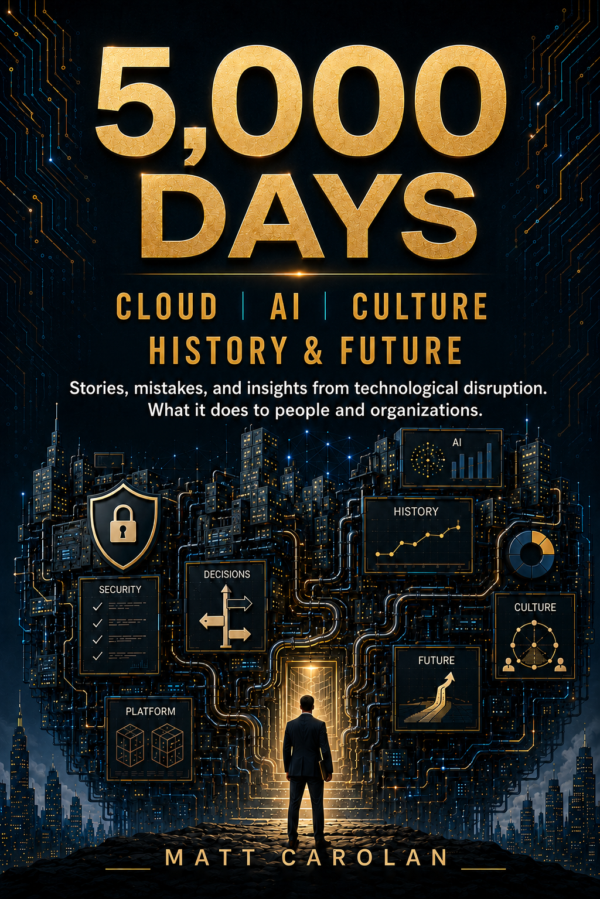

A book by Matt Carolan
5,000 Days
Cloud, AI, Culture, History and Future
Stories, mistakes, and insights from technological disruption. What it does to people and organizations.
- 7
- chapters
- 63
- infographics
- 2
- change profiles
Published by Carolan Press
Chapter 7, made practical
Technology Change Styles Assessment
Technology change happens at the intersection of two forces: how you personally reason and act when the path is unclear, and how your company is structurally designed to move under uncertainty. Discover your Personal Technology Change Style, your Company Technology Change Style, or both, then see where alignment creates momentum and where friction is likely.
Start the Technology Change Styles AssessmentKindle companion · Chapters 1–6
Companion infographics
The book has seven chapters. Choose from Chapters 1–6 here, which are the chapters that include companion infographics, then select one to view it at full size.
Currently viewing
Chapter 1
11 infographics
About the book
Technology changes systems. It also changes people.
5,000 Days looks at cloud, AI, culture, history, and the future through stories from inside technological disruption, the decisions that worked, the mistakes that did not, and the human consequences that rarely fit neatly into a strategy deck.
The Kindle edition links here for its companion infographics. Paperback and hardcover editions include the infographics in print. Every edition uses this site for the Technology Change Styles Assessment, which explores both how you respond to change and how your company moves through it.